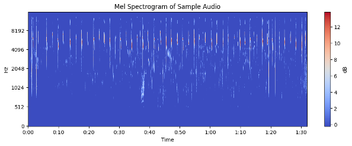

09
Data Analysis & Outputs
Visualizations and demonstration of results

Mel Spectrograms
Audio frequency representation showing bird vocalization patterns
Training Progress
Training loss vs. validation loss over 15 epochs

Window-level Predictions
Probability distributions over time for sliding window inference
🎬 Demo Video
Watch Demo →
Watch Demo →
System Demo
Video demonstration of the bird sound classification system
Sample Prediction Results
| Sample | True Label | Predicted Label | Confidence |
|---|---|---|---|
| sample_001.ogg | American Robin | American Robin | 0.98 |
| sample_002.ogg | Northern Cardinal | Northern Cardinal | 0.97 |
| sample_003.ogg | House Sparrow | House Sparrow | 0.95 |